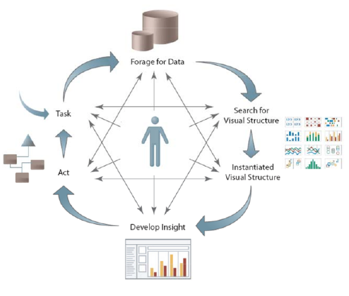

both vis and ML seem to have similar goals: make sense of complex data
Machine learning
Visualization

Morton, Kristi, Ross Bunker, Jock Mackinlay, Robert Morton, and Chris Stolte. “Dynamic workload driven data integration in Tableau,” 2012.
Who helps whom?
both!
Vis helps ML: evaluating models
ML helps vis: ML for embedded analysis
Now to the vis part
How do they work together?
Building models
Validating models
Understanding models
Embedding ML algorithms
Building models
What are meta parameters?
Meta parameters control how learning takes place
Learning rate
Number and size of network layers
Slack variables
Stopping conditions
Why study meta-parameters?
Why study meta-parameters?
Manual method
Manual method
How to study them?
run a bunch of models and examine outputs
design galleries
paramorama
Design galleries
Marks, Joe, Brad Andalman, Paul A. Beardsley, William Freeman, Sarah Gibson, Jessica Hodgins, Thomas Kang, et al. “Design Galleries: A general approach to setting parameters for computer graphics and animation,” 1997.
Design galleries
Marks, Joe, Brad Andalman, Paul A. Beardsley, William Freeman, Sarah Gibson, Jessica Hodgins, Thomas Kang, et al. “Design Galleries: A general approach to setting parameters for computer graphics and animation,” 1997.
Paramorama
Pretorius, A. Johannes, Mark-Anthony P. Bray, Anne E. Carpenter, and Roy A. Ruddle. “Visualization of parameter space for image analysis,” 2011.
How to study them?
use a more principled approach
Objective measures
Visual parameter space exploration
intro
conceptual pipeline
Michael Sedlmair, Christoph Heinzl, Stefan Bruckner, Harald Piringer, and Torsten Möller "Visual parameter space analysis: A conceptual framework" IEEE Transactions on Visualization and Computer Graphics. 20(12) 2014.
Tuner
Torsney-Weir, Thomas, Ahmed Saad, Torsten Möller, Britta Weber, Hans-Christian Hege, Jean-Marc Verbavatz, and Steven Bergner. “Tuner: Principled parameter finding for image segmentation algorithms using visual response surface exploration,” 2011.
Real-time parameter tuning
Lindhart et al. 2018?
Building models
Meta parameters can have a large influence on performance
Almost all ML algorithms require tuning
Manual tuning is time consuming and error prone
Validating and verifying models
What do we mean?
How do we know our models are working?
model selection
Committee on Mathematical Foundations of Verification, Validation, and Uncertainty Quantification; Board on Mathematical Sciences and Their Applications, Division on Engineering and Physical Sciences, National Research Council. Assessing the reliability of complex models: Mathematical and statistical foundations of verification, validation, and uncertainty quantification, 2012. http://www.nap.edu/openbook.php?record_id=13395.
Examples
HyperMoVal - local inspection
Sliceplorer - global inspection
Tuner - error inspection
HyperMoVal
Piringer, Harald, Wolfgang Berger, and Jurgen Krasser. “HyperMoVal: Interactive visual validation of regression models for real-time simulation,” 2010.
Sliceplorer views
Single layer NN (26 nodes)SVM (polynomial kernel)
Dual layer NN (5 and 3 nodes)SVM (RBF kernel)
Torsney-Weir, Thomas, Michael Sedlmair, and Torsten Möller. “Sliceplorer,” 2017.
Tuner error views
Examining multi-dimensional functions
error view shows where model is unsure
can visually verify the model
Prediction
Error view
Optimization
Error view
Validating and verifying models
Summary statistics are not always enough
Balancing multiple objectives is difficult
Certain training points might be very important
Understanding models
Who needs this?
models are complex
the business world likes spreadsheets because they can walk through the calculations
Simple vs complex models
Simple
small integer factor
small number of facto
low-depth trees
Complex
multi-layer neural network
gaussian process model
tSNE
non-linear
many decisions
What does complexity buy us?
Global vs local models
Deep-learning networks can deal with feature selection
Can deal with edge cases
Methods
interaction
walkthroughs
simpler models ala LIME (Ribeiro et al. 2016)
direct inspection
Examples
regression: Muhlbacher and Piringer
clustering: Dis-function
text processing: TagRefinery
smaller models: Explanation explorer
Mühlbacher and Piringer
Directly interact with the model building process
Mühlbacher, Thomas, and Harald Piringer. “A partition-based framework for building and validating regression models,” 2013. Best Paper Award.
Dis-function
Build a distance function interactively
Brown, Eli T, Jingjing Liu, Carla E Brodley, and Remco Chang. “Dis-Function: Learning Distance Functions Interactively,” 2012.
TagRefinery
Tutorial/walkthrough system
Text processing pipeline
Kralj, Christoph, Mohsen Kamalzadeh, and Torsten Möller. “TagRefinery: A visual tool for tag wrangling,” 2017.
TagRefinery
Kralj, Christoph, Mohsen Kamalzadeh, and Torsten Möller. “TagRefinery: A visual tool for tag wrangling,” 2017.
TagRefinery
Kralj, Christoph, Mohsen Kamalzadeh, and Torsten Möller. “TagRefinery: A visual tool for tag wrangling,” 2017.
LIME method
Ribeiro, Marco Tulio, Sameer Singh, and Carlos Guestrin. “‘Why should I trust you?’: Explaining the predictions of any classifier,” 2016.
Explanation explorer
Krause, Josua, Aritra Dasgupta, Jordan Swartz, Yindalon Aphinyanaphongs, and Enrico Bertini. “A workflow for visual diagnostics of binary classifiers using instance-level explanations,” 2017.
Direct inspection
e.g. hidden states in a neural network
LSTMVis
Strobelt, Hendrik, Sebastian Gehrmann, Hanspeter Pfister, and Alexander M. Rush. “LSTMVis: A tool for visual analysis of hidden state dynamics in recurrent neural networks,” 2018.
LSTMVis
Strobelt, Hendrik, Sebastian Gehrmann, Hanspeter Pfister, and Alexander M. Rush. “LSTMVis: A tool for visual analysis of hidden state dynamics in recurrent neural networks,” 2018.
DeepEyes
Pezzotti, Nicola, Thomas Höllt, Jan van Gemert, Boudewijn Lelieveldt, Elmar Eisemann, and Anna Vilanova. “DeepEyes: Progressive visual analytics for designing deep neural networks,” 2018.
DeepEyes
Pezzotti, Nicola, Thomas Höllt, Jan van Gemert, Boudewijn Lelieveldt, Elmar Eisemann, and Anna Vilanova. “DeepEyes: Progressive visual analytics for designing deep neural networks,” 2018.
Machine learning helping vis
How?
Sacha, D., A. Stoffel, F. Stoffel, Bum Chul Kwon, G. Ellis, and Daniel A Keim. “Knowledge generation model for visual analytics,” 2014.


{kind=link}


 Isenberg, Petra, Tobias Isenberg, Michael Sedlmair, Jian Chen, and Torsten Möller. “Visualization as seen through its research paper keywords,” 2017. https://tobias.isenberg.cc/VideosAndDemos/Isenberg2017VST.
Isenberg, Petra, Tobias Isenberg, Michael Sedlmair, Jian Chen, and Torsten Möller. “Visualization as seen through its research paper keywords,” 2017. https://tobias.isenberg.cc/VideosAndDemos/Isenberg2017VST. Isenberg, Petra, Tobias Isenberg, Michael Sedlmair, Jian Chen, and Torsten Möller. “Visualization as seen through its research paper keywords,” 2017. https://tobias.isenberg.cc/VideosAndDemos/Isenberg2017VST.
Isenberg, Petra, Tobias Isenberg, Michael Sedlmair, Jian Chen, and Torsten Möller. “Visualization as seen through its research paper keywords,” 2017. https://tobias.isenberg.cc/VideosAndDemos/Isenberg2017VST.